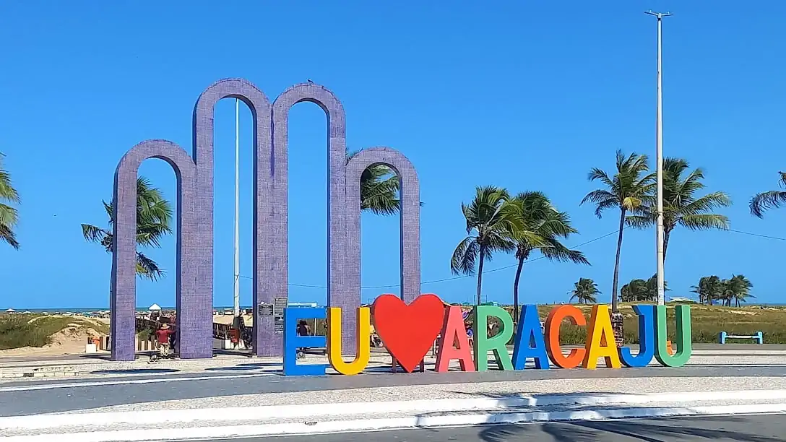

Praia de Atalaia

Na orla de Atalaia existem opções de lazer como bares e casas de dança e música, além de
barracas de água de
coco e quadras de basquete,
futebol, tênis e uma pista de skate. Considerada uma das
mais
bonitas
do
Brasil,
oferece aos cidadãos e turistas o que há de melhorem lazer e entretenimento.
Roteiro Turístico em 1 Dia
- Café da manhã em uma das barracas da orla.
- Caminhada até os Arcos da Atalaia para fotos,
- Visita ao Oceanário de Aracaju (Projeto Tamar)
- Almoço com frutos do mar.
- Tarde livre para banho de mar e esportes.
- Fim de tarde com água de coco observando o pôr do sol.